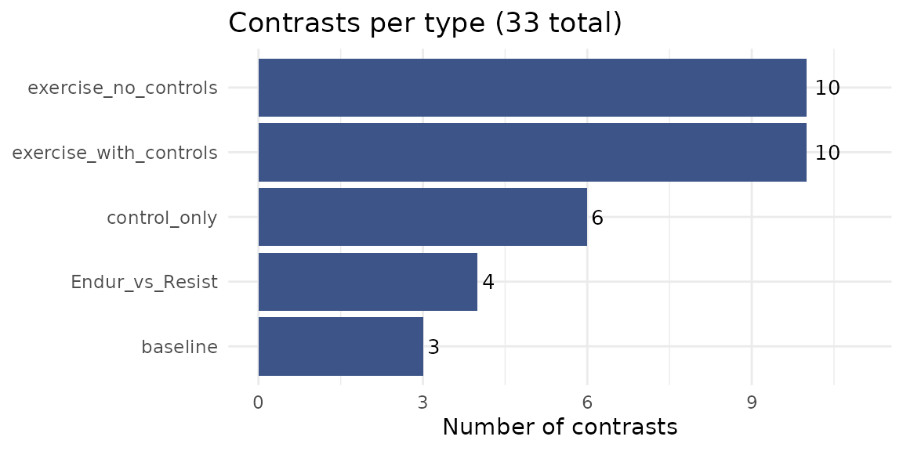
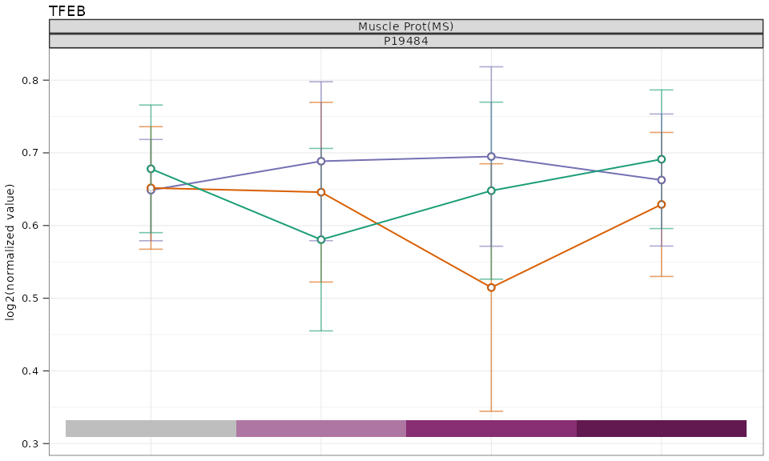

MotrpacHumanPreSuspensionAnalysis: Complete Package Overview
package_overview.Rmd
library(MotrpacHumanPreSuspensionAnalysis)
#> Warning: no DISPLAY variable so Tk is not availableIntroduction
MotrpacHumanPreSuspensionAnalysis is an R package that
distributes summary-level results from the MoTrPAC Human Pre-COVID
sedentary adult exercise study. It provides a unified interface for
loading, exploring, and analyzing differential abundance results across
multiple molecular assays (“omes”) and tissues, along with tools for
gene set enrichment analysis, fuzzy c-means clustering, and
publication-quality visualization.
Important: This package distributes summary-level results only. Subject-level data are not included and must be requested separately through MoTrPAC data access procedures.
Study design overview
The study examined acute exercise responses across three tissues (adipose, blood, and muscle) in sedentary adults randomized to endurance exercise (EE), resistance exercise (RE), or control (CON) groups. Samples were collected at multiple timepoints relative to a single bout of exercise:
- Pre-exercise (baseline)
- During exercise (20 min, 40 min)
- Post-exercise (10 min, 15/30/45 min, 3.5/4 hr, 24 hr)
Molecular profiling spanned seven assay types:
- Transcriptomics (RNA-seq)
- Global proteomics (prot-pr)
- Phosphoproteomics (prot-ph)
- Olink proteomics (prot-ol)
- Metabolomics (14 targeted and untargeted platforms)
- ATAC-seq (epigen-atac-seq)
- MethylCap-seq (epigen-methylcap-seq)
There are also key clinical values
1. Available Tissues and Omes
Before loading any data, you can check which tissues and omes are available.
tissue_available_list()
#> The available tissues are placed into overarching categories. For example, an assay using PBMCs would be categorized as blood.
#> [1] "adipose" "blood" "muscle"
ome_available_list()
#> [1] "prot-ol" "prot-ph" "prot-pr"
#> [4] "transcript-rna-seq" "epigen-methylcap-seq" "epigen-atac-seq"
#> [7] "metab-u-hilicpos" "metab-u-ionpneg" "metab-u-lrpneg"
#> [10] "metab-u-lrppos" "metab-u-rpneg" "metab-u-rppos"
#> [13] "metab-t-amines" "metab-t-conv" "metab-t-imm-crt"
#> [16] "metab-t-oxylipneg" "metab-t-tca" "metab-t-nuc"
#> [19] "metab-t-acoa" "metab-t-ka" "metab-meta-reg"To see only the metabolomics platforms:
metab_only_list()
#> [1] "metab-u-hilicpos" "metab-u-ionpneg" "metab-u-lrpneg"
#> [4] "metab-u-lrppos" "metab-u-rpneg" "metab-u-rppos"
#> [7] "metab-t-amines" "metab-t-conv" "metab-t-imm-crt"
#> [10] "metab-t-oxylipneg" "metab-t-tca" "metab-t-nuc"
#> [13] "metab-t-acoa" "metab-t-ka"2. Data Objects
The package ships with a variety of lazily loaded data objects. These objects are the backbone of most functions in the package.
2.1 Differential Analysis Results
The core DA results are stored as internal data objects (e.g.,
MUSCLE_PROT_PR_DA, BLOOD_TRNSCRPT_DA). These
should not be accessed directly. Instead, use the
load_differential_analysis() function described below.
2.2 Summary Statistics
Group-level means and standard deviations for normalized expression
data are stored as *_SUM_STATS objects (e.g.,
MUSCLE_PROT_PR_SUM_STATS). Use
load_summary_stats() to access these.
2.3 Contrast Converter
The CONTRAST_CONVERTER table maps all 33
contrasts used in differential analysis to their short names,
types, and categories. Understanding the contrast structure is essential
for correctly interpreting results.
For a graphical overview of the study design and timepoints, see the MoTrPAC Acute Exercise Study Design.
head(CONTRAST_CONVERTER)
#> contrast_order
#> <int>
#> 1: 1
#> 2: 2
#> 3: 3
#> 4: 4
#> 5: 5
#> 6: 6
#> contrast
#> <fctr>
#> 1: group_timepointADUEndur.during_20_min - group_timepointADUEndur.pre_exercise - group_timepointADUControl.during_20_min + group_timepointADUControl.pre_exercise
#> 2: group_timepointADUEndur.during_40_min - group_timepointADUEndur.pre_exercise - group_timepointADUControl.during_40_min + group_timepointADUControl.pre_exercise
#> 3: group_timepointADUEndur.post_10_min - group_timepointADUEndur.pre_exercise - group_timepointADUControl.post_10_min + group_timepointADUControl.pre_exercise
#> 4: group_timepointADUEndur.post_15_30_45_min - group_timepointADUEndur.pre_exercise - group_timepointADUControl.post_15_30_45_min + group_timepointADUControl.pre_exercise
#> 5: group_timepointADUEndur.post_3.5_4_hr - group_timepointADUEndur.pre_exercise - group_timepointADUControl.post_3.5_4_hr + group_timepointADUControl.pre_exercise
#> 6: group_timepointADUEndur.post_24_hr - group_timepointADUEndur.pre_exercise - group_timepointADUControl.post_24_hr + group_timepointADUControl.pre_exercise
#> contrast_short
#> <fctr>
#> 1: Endur.during_20_min - Control.during_20_min (delta-delta)
#> 2: Endur.during_40_min - Control.during_40_min (delta-delta)
#> 3: Endur.post_10_min - Control.post_10_min (delta-delta)
#> 4: Endur.post_15_30_45_min - Control.post_15_30_45_min (delta-delta)
#> 5: Endur.post_3.5_4_hr - Control.post_3.5_4_hr (delta-delta)
#> 6: Endur.post_24_hr - Control.post_24_hr (delta-delta)
#> contrast_type contrast_category randomGroupCode Timepoint
#> <fctr> <fctr> <char> <fctr>
#> 1: exercise_with_controls EE-CON ADUEndur during_20_min
#> 2: exercise_with_controls EE-CON ADUEndur during_40_min
#> 3: exercise_with_controls EE-CON ADUEndur post_10_min
#> 4: exercise_with_controls EE-CON ADUEndur post_15_30_45_min
#> 5: exercise_with_controls EE-CON ADUEndur post_3.5_4_hr
#> 6: exercise_with_controls EE-CON ADUEndur post_24_hrContrast types
The 33 contrasts are organized into five types, each addressing a different biological question:
exercise_with_controls(10 contrasts) — The primary analysis. Compares each exercise group (Endurance or Resistance) to time-matched controls using a delta-delta design: (exercise post - exercise pre) - (control post - control pre). This removes baseline differences and isolates the exercise-specific response.exercise_no_controls(10 contrasts) — Within-group change from baseline for each exercise group (post - pre), without adjusting for control group changes. These are purely for comparison to describe the effect of the controls. These are not presented as a main result in the manuscript.Endur_vs_Resist(4 contrasts) — Direct comparison of endurance vs. resistance exercise at each post-exercise timepoint (delta-delta design). Identifies modality-differing responses.baseline(3 contrasts) — Pre-exercise differences between groups (Endurance vs. Resistance, Endurance vs. Control, Resistance vs. Control). Verifies randomization and identifies pre-existing group differences. Also evaluates the potential effect of the familiarization protocol.control_only(6 contrasts) — Control group changes over time relative to their own pre-exercise baseline. Captures effects of fasting, biopsy, or circadian variation unrelated to exercise.
Available contrasts by type
# Number of contrasts per type
contrast_counts <- as.data.frame(table(CONTRAST_CONVERTER$contrast_type))
colnames(contrast_counts) <- c("contrast_type", "n")
ggplot2::ggplot(contrast_counts,
ggplot2::aes(x = reorder(contrast_type, n), y = n)) +
ggplot2::geom_col(fill = "#3C5488") +
ggplot2::geom_text(ggplot2::aes(label = n), hjust = -0.3, size = 3.5) +
ggplot2::coord_flip() +
ggplot2::labs(x = NULL, y = "Number of contrasts",
title = "Contrasts per type (33 total)") +
ggplot2::theme_minimal() +
ggplot2::ylim(0, max(contrast_counts$n) + 1)
# Show the short contrast names grouped by type
for (ct in unique(CONTRAST_CONVERTER$contrast_type)) {
cat("**", ct, "**\n\n", sep = "")
shorts <- CONTRAST_CONVERTER$contrast_short[CONTRAST_CONVERTER$contrast_type == ct]
for (s in shorts) cat("-", as.character(s), "\n")
cat("\n")
}exercise_with_controls
- Endur.during_20_min - Control.during_20_min (delta-delta)
- Endur.during_40_min - Control.during_40_min (delta-delta)
- Endur.post_10_min - Control.post_10_min (delta-delta)
- Endur.post_15_30_45_min - Control.post_15_30_45_min (delta-delta)
- Endur.post_3.5_4_hr - Control.post_3.5_4_hr (delta-delta)
- Endur.post_24_hr - Control.post_24_hr (delta-delta)
- Resist.post_10_min - Control.post_10_min (delta-delta)
- Resist.post_15_30_45_min - Control.post_15_30_45_min (delta-delta)
- Resist.post_3.5_4_hr - Control.post_3.5_4_hr (delta-delta)
- Resist.post_24_hr - Control.post_24_hr (delta-delta)
exercise_no_controls
- Endur.during_20_min - Endur.pre_exercise
- Endur.during_40_min - Endur.pre_exercise
- Endur.post_10_min - Endur.pre_exercise
- Endur.post_15_30_45_min - Endur.pre_exercise
- Endur.post_3.5_4_hr - Endur.pre_exercise
- Endur.post_24_hr - Endur.pre_exercise
- Resist.post_10_min - Resist.pre_exercise
- Resist.post_15_30_45_min - Resist.pre_exercise
- Resist.post_3.5_4_hr - Resist.pre_exercise
- Resist.post_24_hr - Resist.pre_exercise
Endur_vs_Resist
- Endur.post_10_min - Resist.post_10_min (delta-delta)
- Endur.post_15_30_45_min - Resist.post_15_30_45_min (delta-delta)
- Endur.post_3.5_4_hr - Resist.post_3.5_4_hr (delta-delta)
- Endur.post_24_hr - Resist.post_24_hr (delta-delta)
baseline
- Endur.pre_exercise - Resist.pre_exercise
- Endur.pre_exercise - Control.pre_exercise
- Resist.pre_exercise - Control.pre_exercise
control_only
- Control.during_20_min - Control.pre_exercise
- Control.during_40_min - Control.pre_exercise
- Control.post_10_min - Control.pre_exercise
- Control.post_15_30_45_min - Control.pre_exercise
- Control.post_3.5_4_hr - Control.pre_exercise
- Control.post_24_hr - Control.pre_exercise
Most downstream analyses focus on
exercise_with_controls. Make sure to filter by
contrast_type before interpreting results:
DA <- load_differential_analysis(single_matrix = TRUE)
# Keep only the primary exercise-vs-control contrasts
DA_primary <- DA[DA$contrast_type == "exercise_with_controls", ]2.4 Feature-to-Gene Mapping
HUMAN_FEATURE_TO_GENE is a large lookup table (~1.96M
rows) that maps feature IDs to gene symbols, Entrez IDs, Ensembl IDs,
UniProt IDs, RefMet names, KEGG IDs, and flanking sequences (for
phosphoproteomics).
str(HUMAN_FEATURE_TO_GENE[1:5, ])which should print:
Classes ‘data.table’ and 'data.frame': 5 obs. of 11 variables:
$ assay : Factor w/ 7 levels "epigen-atac-seq",..: 1 1 1 1 1
$ feature_id : Factor w/ 1958568 levels "(E,E)-Trichostachine",..: 793 794 795 796 797
$ entrez_gene : Factor w/ 23406 levels "1","10","100",..: 8521 8521 4916 8521 8521
$ gene_symbol : Factor w/ 32911 levels "5_8S_rRNA","5S_rRNA",..: 27108 27108 22521 27108 27108
$ ensembl_gene : Factor w/ 50007 levels "ENSG00000000003",..: 4704 4704 10604 4704 4704
$ custom_annotation : Factor w/ 10 levels "3' UTR","5' UTR",..: 6 5 6 6 6
$ relationship_to_gene: num 0 0 0 0 0
$ uniprot : Factor w/ 10736 levels "A0A075B6H7","A0A075B6H8",..: NA NA NA NA NA
$ refmet_name : Factor w/ 1513 levels "(E,E)-Trichostachine",..: NA NA NA NA NA
$ kegg_id : Factor w/ 392 levels "C00002","C00003",..: NA NA NA NA NA
$ flanking_sequence : Factor w/ 30682 levels "------MsDEEVEQV",..: NA NA NA NA NA
- attr(*, ".internal.selfref")=<externalptr>
- attr(*, "sorted")= chr [1:2] "assay" "feature_id"2.5 Metabolomics CVs
METABOLOMICS_CVS contains coefficients of variation for
metabolomics features, used internally to select the lowest-CV feature
when multiple features map to the same RefMet metabolite.
head(METABOLOMICS_CVS)
#> # A tibble: 6 × 9
#> tissue_assay_sites tissue_code assay site feature_id feature_cv refmet_name
#> <chr> <chr> <chr> <chr> <chr> <dbl> <fct>
#> 1 t02-plasma,metab-t-… t02-plasma meta… mayo 1-Methylh… 10.5 1-Methylhi…
#> 2 t02-plasma,metab-t-… t02-plasma meta… mayo 3-Methylh… 18.2 3-Methylhi…
#> 3 t02-plasma,metab-t-… t02-plasma meta… mayo Alanine 5.73 Alanine
#> 4 t02-plasma,metab-t-… t02-plasma meta… mayo alpha-Ami… 6.75 Aminoadipi…
#> 5 t02-plasma,metab-t-… t02-plasma meta… mayo alpha-Ami… 11.9 2-Aminobut…
#> 6 t02-plasma,metab-t-… t02-plasma meta… mayo Arginine 11.6 Arginine
#> # ℹ 2 more variables: tissue <chr>, lowest_CV <chr>2.6 Molecular Signatures
MOLECULAR_SIGNATURES is a named list of gene set
databases used for enrichment analysis. Available databases include:
names(MOLECULAR_SIGNATURES)
#> [1] "BIOCARTA" "KEGG_MEDICUS" "PID" "REACTOME" "WP"
#> [6] "GOBP" "GOCC" "GOMF" "MITOCARTA" "PSP"
#> [11] "REFMET" "PTMSIGDB" "CELLMARKER"These include canonical pathway databases (BIOCARTA, KEGG_MEDICUS, PID, REACTOME, WikiPathways), Gene Ontology collections (GOBP, GOCC, GOMF), MitoCarta3.0, PhosphoSitePlus kinase substrates (PSP), RefMet chemical subclasses (REFMET), PTMSigDB, and CellMarker.
2.7 SET_TO_ID
SET_TO_ID maps each molecular signature to a unique
numeric ID and shortened name for use in figures and enrichment
analyses.
head(SET_TO_ID)
#> collection database set_id set
#> 1 C2 BIOCARTA 00001 BIOCARTA_41BB_PATHWAY
#> 2 C2 BIOCARTA 00002 BIOCARTA_ACE2_PATHWAY
#> 3 C2 BIOCARTA 00003 BIOCARTA_ACETAMINOPHEN_PATHWAY
#> 4 C2 BIOCARTA 00004 BIOCARTA_ACH_PATHWAY
#> 5 C2 BIOCARTA 00005 BIOCARTA_ACTINY_PATHWAY
#> 6 C2 BIOCARTA 00006 BIOCARTA_AGPCR_PATHWAY
#> set_short
#> 1 BIOCARTA_41BB_PATHWAY
#> 2 BIOCARTA_ACE2_PATHWAY
#> 3 BIOCARTA_ACETAMINOPHEN_PATHWAY
#> 4 BIOCARTA_ACH_PATHWAY
#> 5 BIOCARTA_ACTINY_PATHWAY
#> 6 BIOCARTA_AGPCR_PATHWAY2.8 Pre-computed Enrichment and Clustering Results
The package includes pre-computed results for convenience:
-
CAMERA_RESULTS— CAMERA-PR enrichment results across all tissues and omes -
FCM_CLUSTERS— Fuzzy c-means clustering assignments -
FCM_CAMERA— Cluster-level CAMERA enrichment results -
FCM_ORA— Cluster-level over-representation analysis results
2.9 Other Data Objects
-
COVARIATES_FILE— covariates used in differential modeling -
OUTLIERS— flagged outlier samples from QC review -
UTORONTO_TFs— curated human transcription factor list (Lambert et al.) -
OME_TISSUE_CODE— tissue codes for each ome -
SPLICING_DA— significant differential alternative splicing results (FDR < 0.05)
Color and Annotation Objects
For consistent figure styling, the package provides named color vectors:
-
HUMAN_TISSUE_COLORS— tissue colors -
HUMAN_EXERCISE_GROUP_COLORS— exercise group colors (EE, RE, CON) -
HUMAN_ACUTE_TIMEPOINT_COLORS— timepoint phase colors -
HUMAN_OME_COLORS— molecular modality colors -
HUMAN_SEX_COLORS— sex-based colors -
HUMAN_TISSUE_ABBR— tissue abbreviations
3. Loading Differential Analysis Results
The primary entry point for accessing DA results is
load_differential_analysis().
3.1 Load all results
DA_list <- load_differential_analysis()
#> You've requested one or more epigenetic omes (via explicit selection or "all") but `epigen = FALSE`, so epigenetic data will be skipped. Set `epigen = TRUE` to load epigenetic data.
#> Please remember that the lowest CV Metabolite is chosen and the
#> relevant refmet name is used. If you're not able to find your desired
#> metabolite, look through the METABOLOMICS_CV object for the relevant
#> refmet/feature name.This returns a nested list organized by tissue (top level) and ome (second level):
names(DA_list)
#> [1] "adipose" "blood" "muscle"
lapply(DA_list, names)
#> $adipose
#> [1] "metab" "prot-ph" "prot-pr"
#> [4] "transcript-rna-seq"
#>
#> $blood
#> [1] "metab" "prot-ol" "transcript-rna-seq"
#>
#> $muscle
#> [1] "metab" "prot-ph" "prot-pr"
#> [4] "transcript-rna-seq"Each element is a data.table with standardized columns
including tissue, assay,
contrast, contrast_type,
feature_id, logFC, z.std,
p_value, adj_p_value, and more.
str(DA_list[["muscle"]][["prot-pr"]])
#> Classes 'data.table' and 'data.frame': 130137 obs. of 20 variables:
#> $ tissue : chr "muscle" "muscle" "muscle" "muscle" ...
#> $ assay : chr "prot-pr" "prot-pr" "prot-pr" "prot-pr" ...
#> $ full_model : Factor w/ 1 level "~ 0 + group_timepoint + BMI + calculatedAge + Sex + (1 | pid)": 1 1 1 1 1 1 1 1 1 1 ...
#> $ contrast : Factor w/ 21 levels "group_timepointADUEndur.post_15_30_45_min - group_timepointADUEndur.pre_exercise - group_timepointADUControl.po"| __truncated__,..: 1 1 1 1 1 1 1 1 1 1 ...
#> $ contrast_short : Factor w/ 33 levels "Endur.during_20_min - Control.during_20_min (delta-delta)",..: 4 4 4 4 4 4 4 4 4 4 ...
#> $ contrast_type : Factor w/ 5 levels "exercise_with_controls",..: 1 1 1 1 1 1 1 1 1 1 ...
#> $ contrast_category : Factor w/ 6 levels "EE-CON","RE-CON",..: 1 1 1 1 1 1 1 1 1 1 ...
#> $ randomGroupCode : chr "ADUEndur" "ADUEndur" "ADUEndur" "ADUEndur" ...
#> $ Timepoint : Factor w/ 7 levels "pre_exercise",..: 5 5 5 5 5 5 5 5 5 5 ...
#> $ feature_id : chr "P46976-2" "Q9H3M7" "Q9NW81" "Q9Y3B4" ...
#> $ logFC : num 0.419 -0.412 -0.327 0.138 0.346 ...
#> $ CI.L : num 0.278 -0.6027 -0.5251 0.0533 0.1326 ...
#> $ CI.R : num 0.56 -0.222 -0.13 0.223 0.56 ...
#> $ degrees_of_freedom: num 293 248 203 126 116 ...
#> $ logLik : num -310 -371 -414 -326 -295 ...
#> $ t : num 5.86 -4.27 -3.27 3.21 3.21 ...
#> $ AveExpr : num 0.404 -0.785 0.471 -0.359 -0.404 ...
#> $ z.std : num 5.66 -4.19 -3.21 3.17 3.14 ...
#> $ p_value : num 1.55e-08 2.74e-05 1.32e-03 1.50e-03 1.72e-03 ...
#> $ adj_p_value : num 9.62e-05 8.50e-02 1.00 1.00 1.00 ...
#> - attr(*, ".internal.selfref")=<pointer: (nil)>
#> - attr(*, "sorted")= chr [1:4] "full_model" "contrast" "p_value" "feature_id"3.2 Filter by tissue and ome
DA_muscle_rna <- load_differential_analysis(
selected_tissues = "muscle",
selected_omes = "transcript-rna-seq"
)3.3 Return a single matrix
For analyses that prefer a flat data frame:
DA_matrix <- load_differential_analysis(single_matrix = TRUE)
#> You've requested one or more epigenetic omes (via explicit selection or "all") but `epigen = FALSE`, so epigenetic data will be skipped. Set `epigen = TRUE` to load epigenetic data.
#> Please remember that the lowest CV Metabolite is chosen and the
#> relevant refmet name is used. If you're not able to find your desired
#> metabolite, look through the METABOLOMICS_CV object for the relevant
#> refmet/feature name.
dim(DA_matrix)
#> [1] 2212065 213.4 Include gene annotations
Merge DA results with HUMAN_FEATURE_TO_GENE in one
step:
DA_annotated <- load_differential_analysis(
selected_tissues = "muscle",
selected_omes = "prot-pr",
combine_with_featgene = TRUE
)
colnames(DA_annotated[["muscle"]][["prot-pr"]])
#> [1] "tissue" "assay" "full_model"
#> [4] "contrast" "contrast_short" "contrast_type"
#> [7] "contrast_category" "randomGroupCode" "Timepoint"
#> [10] "feature_id" "entrez_gene" "gene_symbol"
#> [13] "ensembl_gene" "uniprot" "logFC"
#> [16] "CI.L" "CI.R" "degrees_of_freedom"
#> [19] "logLik" "t" "AveExpr"
#> [22] "z.std" "p_value" "adj_p_value"3.5 Epigenomics data
Epigenomics results are not bundled with the package due to file
size. Setting epigen = TRUE downloads them from AWS:
DA_list <- load_differential_analysis(epigen = TRUE)This requires network access and can take 30+ minutes for the initial download.
3.6 Metabolomics handling
When any metabolomics platform is selected, all metabolomics data are
loaded to enable consistent platform-level filtering. Redundant features
mapping to the same RefMet metabolite are resolved by selecting the
lowest-CV feature, and p-values are recalculated within contrasts. If a
metabolite of interest appears missing, consult
METABOLOMICS_CVS.
3.7 Splicing data
Differential alternative splicing results (FDR < 0.05 only) are available directly:
names(SPLICING_DA)
#> [1] "adipose" "blood" "muscle"4. Loading Summary Statistics
load_summary_stats() loads group-level means and
standard deviations for normalized expression data.
## Load all summary statistics
sum_stats <- load_summary_stats()
## Load metabolomics only
metab_stats <- load_summary_stats(selected_omes = "metab")
## Load as a single combined table
adipose_rna <- load_summary_stats(
selected_tissues = "adipose",
selected_omes = "transcript-rna-seq",
single_matrix = TRUE
)The interface mirrors load_differential_analysis() with
selected_tissues, selected_omes, and
single_matrix parameters.
5. Visualization
The package provides several plotting functions for both individual features and pathway-level results.
5.1 Single Feature Plots
plot_single_feature() creates time-course line plots for
a given feature, gene, or metabolite across tissues and omes. Points are
highlighted when the adjusted p-value falls below a threshold.
# Returns a ggplot object that displays inline.
# Use the optional output_file parameter to save to PDF.
plot_single_feature(
feature = "TFEB",
selected_tissues = "muscle",
selected_omes = "prot-pr",
p_level = 0.05,
color_time_labels = TRUE,
include_legend = FALSE
)
#> DA is loaded automatically using requested settings.
#> If any metab platform was requested, the metab features will default to
#> any metabolomics platform measured.
#> Scale for fill is already present.
#> Adding another scale for fill, which will replace the existing scale.
#> Saved plot not requested or multi-faceted plot detected.
#> Will not automatically save a plot. Please save plot manually.
#> Recommended height per plot is 1.54 inches, and recommended width per plot
#> of 1.225 inches with scale_factor set to 1.
#> Use width of 1.715 if a right hand legend is desired
Key parameters:
-
feature— a feature_id, gene_symbol, or refmet_name (case-insensitive) -
p_level— adjusted p-value threshold; significant points are filled black -
color_time_labels— replaces x-axis text with colored tiles (single-panel only) -
scale_factor— scales all plot elements proportionally for posters/presentations -
output_file— optional path to save (recommended single-panel dimensions: H=1.54in, W=1.225in at scale_factor=1)
5.2 Feature Heatmaps
plot_feature_heatmap() generates a ComplexHeatmap for a
set of features or a molecular signature pathway, showing z-scores
across contrasts.
# Note: filename is required — the heatmap is saved directly to PDF.
# Heatmap from a specific pathway (using set_id from SET_TO_ID)
plot_feature_heatmap(
feature_ids = c("ENSG00000006210.7", "ENSG00000176907.5"),
selected_tissue = "muscle",
selected_ome = "transcript-rna-seq",
filename = "custom_feature_heatmap.pdf"
)
plot_feature_heatmap(
set_id = "00001",
selected_tissue = "muscle",
selected_ome = "prot-ph",
contrast_type = "exercise_with_controls",
filename = "feature_heatmap_example.pdf"
)Key parameters:
-
feature_ids— character vector of feature IDs for the heatmap rows -
set_id— alternatively, a pathway ID fromSET_TO_ID(overridesfeature_ids) -
selected_tissue— one or more tissues (multi-tissue supported) -
selected_ome— exactly one ome -
contrast_type— which contrasts to display -
post_min/post_hr— specify exact timepoints (15, 30, or 45 min; 3.5 or 4 hr) -
full_modality_names— display “Endurance Exercise” instead of “EE” -
max_size— limit the number of features displayed from a pathway
5.3 Enrichment Heatmaps
plot_enrich_heatmap() creates bubble heatmaps from
CAMERA-PR or PTM-SEA results, showing enrichment z-scores with
significance bubbles.
# Note: filename is required — the heatmap is saved directly to PDF.
# Using pre-computed CAMERA results
plot_enrich_heatmap(
x = CAMERA_RESULTS,
selected_tissues = "muscle",
selected_ome = "prot-pr",
contrast_type = "exercise_with_controls",
n_top = 10,
filename = "enrichment_heatmap.pdf"
)
# Filter to specific pathways
plot_enrich_heatmap(
x = CAMERA_RESULTS,
set_ids = c("00269", "00930"),
selected_tissues = c("adipose", "blood"),
selected_ome = "transcript-rna-seq",
filename = "selected_pathways.pdf"
)5.4 Cluster Trajectory Plots
After running fuzzy c-means clustering, use
plot_cmeans() to visualize cluster trajectories as line
plots colored by membership probability.
# Note: filename is required — the plot is saved directly to PDF.
FCM <- run_cmeans(selected_tissues = "adipose")
plot_cmeans(
FCM = FCM[["adipose"]],
filename = "adipose_clusters.pdf",
min_membership = 0.3,
ncol = 4
)Key parameters:
-
keep_clusters— subset to specific cluster numbers -
min_membership— minimum membership probability for display -
common_ylim— use the same y-axis across all cluster panels -
modality— show “both”, “Endur” only, or “Resist” only
5.5 Cluster Enrichment Heatmaps
plot_cluster_enrichment() generates bubble heatmaps for
cluster-level enrichment results (from
run_cluster_cameraPR() or
run_cluster_ORA()).
# Note: filename is required — the heatmap is saved directly to PDF.
plot_cluster_enrichment(
x = FCM_CAMERA,
selected_ome = "prot-pr",
selected_tissues = "muscle",
filename = "cluster_enrichment.pdf"
)6. Enrichment Analysis
The package provides wrappers for competitive gene set testing and over-representation analysis.
6.1 CAMERA-PR (Competitive Gene Set Testing)
run_cameraPR() performs pre-ranked Correlation Adjusted
MEan RAnk gene set analysis on the DA z-statistics. It tests whether
molecular signatures show coordinated up- or down-regulation.
# Run on muscle global proteomics with GOBP and Reactome databases
camera_res <- run_cameraPR(
selected_omes = "prot-pr",
selected_tissues = "muscle",
database = c("GOBP", "REACTOME")
)
head(camera_res)
# Run on all omes with all databases (default)
camera_all <- run_cameraPR()Key parameters:
-
database— one or more of: BIOCARTA, KEGG_MEDICUS, PID, REACTOME, WP, GOBP, GOCC, GOMF, MITOCARTA, PSP (prot-ph only), REFMET (metab only) -
path_to_gmt— optionally supply custom GMT files (overridesdatabase) -
min_size— minimum set size for testing (default: 5) -
overlap_cutoff— minimum proportion of set genes in the dataset (default: 0.7) -
DA_list— optionally supply custom DA results
Pre-computed results are available as
CAMERA_RESULTS.
7. Fuzzy C-Means Clustering
run_cmeans() performs fuzzy c-means (FCM) clustering on
z-score matrices from differential analysis, grouping features with
similar temporal response patterns.
# Run with defaults (13 clusters for adipose/blood, 12 for muscle)
FCM <- run_cmeans()
names(FCM) # one element per tissue
# Explore optimal cluster numbers
FCM_explore <- run_cmeans(
selected_tissues = "adipose",
num_clusters_adipose = 3:14
)
# Run for a single modality
FCM_endur <- run_cmeans(
selected_tissues = "muscle",
modality = "Endur"
)Features are scaled by their standard deviation (including pre-exercise zeros) before clustering. Clusters are reordered by hierarchical clustering of centroids so that similar trajectories appear adjacent.
Pre-computed clustering results are available as
FCM_CLUSTERS.
7.1 Cluster-Level Enrichment with CAMERA-PR
run_cluster_cameraPR() tests whether molecular
signatures localize to specific cluster centroids using modified signed
rank tests.
FCM <- run_cmeans()
cluster_camera <- run_cluster_cameraPR(FCM = FCM)
head(cluster_camera)Pre-computed results: FCM_CAMERA.
7.2 Cluster-Level Over-Representation Analysis
run_cluster_ORA() performs ORA within each cluster,
identifying over-represented molecular signatures among features with
high membership probabilities.
FCM <- run_cmeans()
cluster_ora <- run_cluster_ORA(
FCM = FCM,
min_prob = 0.3
)
head(cluster_ora)Pre-computed results: FCM_ORA.
8. Typical Workflow
Below is a typical analysis workflow combining the major package functions:
# 1. Load differential analysis results
DA_list <- load_differential_analysis(
selected_tissues = "muscle",
selected_omes = c("transcript-rna-seq", "prot-pr"),
combine_with_featgene = TRUE
)
# 2. Explore a specific gene
plot_single_feature(
feature = "PPARGC1A",
selected_tissues = "muscle",
selected_omes = c("transcript-rna-seq", "prot-pr"),
p_level = 0.05
)
# 3. Run enrichment analysis
camera_res <- run_cameraPR(
selected_omes = c("transcript-rna-seq", "prot-pr"),
selected_tissues = "muscle",
database = c("GOBP", "REACTOME")
)
# 4. Visualize top enriched pathways
plot_enrich_heatmap(
x = camera_res,
selected_tissues = "muscle",
selected_ome = "prot-pr",
contrast_type = "exercise_with_controls",
n_top = 10,
filename = "muscle_prot_enrichment.pdf"
)
# 5. Perform clustering
FCM <- run_cmeans(selected_tissues = "muscle")
# 6. Visualize clusters
plot_cmeans(
FCM = FCM[["muscle"]],
filename = "muscle_clusters.pdf",
min_membership = 0.3
)
# 7. Cluster-level enrichment
cluster_res <- run_cluster_cameraPR(
FCM = FCM,
selected_tissues = "muscle"
)
# 8. Visualize cluster enrichment
plot_cluster_enrichment(
x = cluster_res,
selected_ome = "prot-pr",
selected_tissues = "muscle",
filename = "muscle_cluster_enrichment.pdf"
)9. Session Info
sessionInfo()
#> R version 4.6.1 (2026-06-24)
#> Platform: x86_64-pc-linux-gnu
#> Running under: Ubuntu 24.04.4 LTS
#>
#> Matrix products: default
#> BLAS: /usr/lib/x86_64-linux-gnu/openblas-pthread/libblas.so.3
#> LAPACK: /usr/lib/x86_64-linux-gnu/openblas-pthread/libopenblasp-r0.3.26.so; LAPACK version 3.12.0
#>
#> locale:
#> [1] LC_CTYPE=C.UTF-8 LC_NUMERIC=C LC_TIME=C.UTF-8
#> [4] LC_COLLATE=C.UTF-8 LC_MONETARY=C.UTF-8 LC_MESSAGES=C.UTF-8
#> [7] LC_PAPER=C.UTF-8 LC_NAME=C LC_ADDRESS=C
#> [10] LC_TELEPHONE=C LC_MEASUREMENT=C.UTF-8 LC_IDENTIFICATION=C
#>
#> time zone: UTC
#> tzcode source: system (glibc)
#>
#> attached base packages:
#> [1] tcltk stats graphics grDevices utils datasets methods
#> [8] base
#>
#> other attached packages:
#> [1] MotrpacHumanPreSuspensionAnalysis_0.2.4
#> [2] DynDoc_1.90.0
#> [3] widgetTools_1.90.0
#>
#> loaded via a namespace (and not attached):
#> [1] gtable_0.3.6 circlize_0.4.18 shape_1.4.6.1
#> [4] rjson_0.2.23 xfun_0.60 bslib_0.11.0
#> [7] ggplot2_4.0.3 GlobalOptions_0.1.4 rstatix_1.0.0
#> [10] Biobase_2.72.0 vctrs_0.7.3 tools_4.6.1
#> [13] generics_0.1.4 stats4_4.6.1 parallel_4.6.1
#> [16] tibble_3.3.1 cluster_2.1.8.2 pkgconfig_2.0.3
#> [19] data.table_1.18.4 RColorBrewer_1.1-3 S7_0.2.2
#> [22] desc_1.4.3 S4Vectors_0.50.1 lifecycle_1.0.5
#> [25] stringr_1.6.0 compiler_4.6.1 farver_2.1.2
#> [28] textshaping_1.0.5 codetools_0.2-20 ComplexHeatmap_2.28.0
#> [31] carData_3.0-6 clue_0.3-68 htmltools_0.5.9
#> [34] sass_0.4.10 yaml_2.3.12 Formula_1.2-5
#> [37] car_3.1-5 pkgdown_2.2.1 pillar_1.11.1
#> [40] ggpubr_1.0.0 crayon_1.5.3 jquerylib_0.1.4
#> [43] tidyr_1.3.2 cachem_1.1.0 iterators_1.0.14
#> [46] abind_1.4-8 foreach_1.5.2 tidyselect_1.2.1
#> [49] digest_0.6.39 stringi_1.8.7 dplyr_1.2.1
#> [52] purrr_1.2.2 labeling_0.4.3 latex2exp_0.9.8
#> [55] fastmap_1.2.0 grid_4.6.1 colorspace_2.1-3
#> [58] cli_3.6.6 magrittr_2.0.5 utf8_1.2.6
#> [61] broom_1.0.13 withr_3.0.3 backports_1.5.1
#> [64] scales_1.4.0 rmarkdown_2.31 matrixStats_1.5.0
#> [67] otel_0.2.0 ggsignif_0.6.4 ragg_1.5.2
#> [70] png_0.1-9 GetoptLong_1.1.1 tkWidgets_1.90.0
#> [73] evaluate_1.0.5 knitr_1.51 IRanges_2.46.0
#> [76] doParallel_1.0.17 rlang_1.3.0 glue_1.8.1
#> [79] BiocGenerics_0.58.1 jsonlite_2.0.0 R6_2.6.1
#> [82] Mfuzz_2.72.0 systemfonts_1.3.2 fs_2.1.0